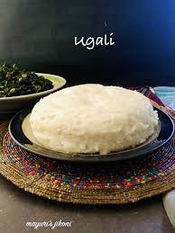

Ugali Recipe

Description
Ugali is a cake looking dish made from maize flour.
It is consumed in many parts of Africa and goes by a variety of names depending on the level of softness.
Ingredients
Steps
- Place some water in a cooking pot and bring it to a boil.
- Add maize flour in small portions as you stir.
- Knead the mixture using a flat based cooking stick under moderate heat.
- Keep kneading the mixture as it hardens, making sure to flatten the forming lumps.
- The meal should be ready after about 8 to 10 minutes of repeating the last 2 steps.
- Serve on a plate and consume with your favorite stew.